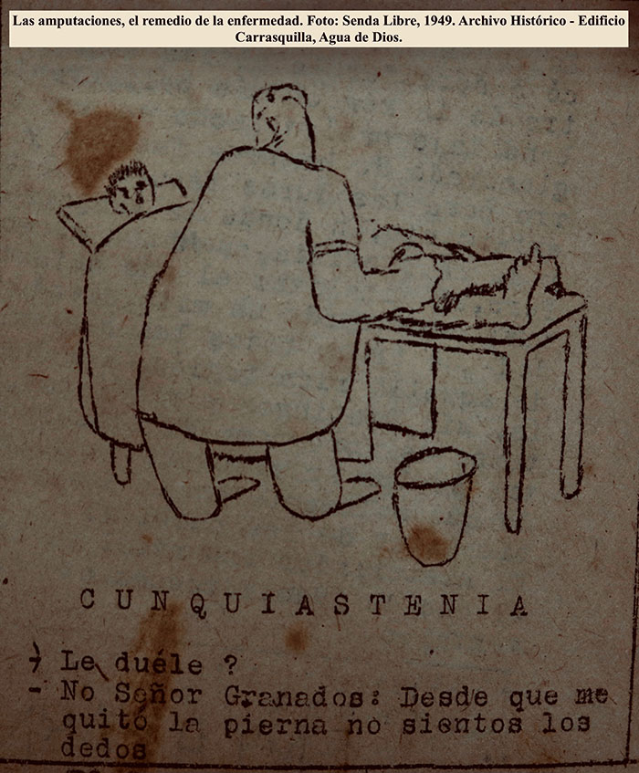

Este es el relato de Elvia Trujillo, la mujer que pareciese no tener la enfermedad luego de hacer una supervición de arriba a bajo intentando encontrar el morbo que los caracteriza, sin embargo, fue ella quien decidió por voluntad propia, abandonar a su familia y llegar a Agua de Dios por los constantes rechazos y desprecios que afrontaba. Elvia desde su nacimiento, no tuvo la suerte de tener a su madre por haber sido víctima de la enfermedad y ser recluida también, en el mismo lugar donde se encuentra su hija.
Una experiencia de vida que no es del todo fácil de relatar cuando para Elvía como para los otros pacientes, es el talón de Aquiles que intentan evitar, una vez se conoce que la familia a parte de ser el vínculo preciado por la humanidad es también, el primer agente que excluye al enfermo de la vida social. “Yo digo que lamentablemente el primer rechazo que sufren es el de la familia”, comenta el periodista Jaime Molina de manera contundente, al percibir entre la historia de sus amigos el dolor que les ocasionó el desprendimiento del lazo familiar.
Como lo fue para Belsiberio Martínez, el hombre que aparece de la nada junto a su carro eléctrico y una perra criolla que, como compañía, rondan por los pasillos del albergue Boyacá (masculino) husmeando el orden del espacio acogedor y tranquilo, para así, ganarle tiempo al juego de la soledad mientras distrae su vida saludando a enfermeras y compañeros de cuarto. Independientemente de la caballerosidad y seriedad con que dirige los saludos, Belsiberio es para muchos, el hombre mal humorado por su mirada fuerte, penetrante y ruda a la vez, cuando tiene el poder de intimidar y poner en duda la personalidad que se esconde detrás de su mirada.
Acercarse a él, era detener su carro y perder de vista a la perra criolla que encontró otro camino para continuar su rumbo. Pero luego de la presentación formal y de varios minutos de conversación un poco cortante y monosílabo, Belsiberio se desvanece al intentar con disimulo, no solo posar un semblante frío y tosco que no haga quebrantar su ego sino que además, intenta mantener una voz fuerte y seca para no dejar a la vista la tristeza que no quiere soltar. Pero esa apariencia no duró mucho tras ser delatada por el nerviosismo incontrolable que se refleja en el revoleteo de sus manos una vez, intenta no hablar sobre su su familia.
Un dolor que, al sentirse incomodo recordando la pesadilla del abandono, él con facilidad desvía la conversación en cuestión de segundos, cuando hablar de sus extremidades se vuelve en el atractivo de la conversación. "¿Usted sabe por qué no tengo las piernas?", pregunta. “Una la perdí por la lucha contra el cáncer y la otra, por la lucha contra la lepra”, responde mirando sus extremidades incompletas que desde luego, hace comprender que son las secuelas que identifica a la mayoría de los paciente cuando años pasados, se vieron sometidos a la amputación como tratamiento que eliminaba la lepra del cuerpo.
Pero si se sigue ahondando el tema del rechazo familiar, los testimonios continúan si se conoce también, al paciente Ramón Guerrero, el hombre que aún conserva la sensación de abandono por parte de su madre que, al desinteresarse en la crianza de sus cuatro hijos, obligó a su padre a escaparse de la condena perpetua de la lepra para regresar a su casa y encontrar la solución amarga que se convirtió en la lágrima constante de Ramón.
El padre, una vez huyó de las autoridades, decidió repartir a sus hijos en diferentes casas de familia sin importar el futuro que les deparaba. Mientras sus dos hermanas corrieron con buena suerte, él terminó en en Agua de Dios llorando y extrañando a su hermano mayor por quien no conoce aún su paradero.
Y si nos trasladamos de nuevo al albergue San Vicente (femenino) se puede escuchar también, la historia de María Concepción Jaramillo, la mujer que a sus más de 60 años llegó a Agua de Dios un 13 de mayo de 1974 desde la ciudad de Montería, Córdoba junto a sus hermanos que, al ser una familia numerosa, menciona que cinco de 15 padecieron la enfermedad. La familia fue azotada por la sociedad debido al miedo que se tenía frente al contagio, lo cual conllevó a que su padre construyera una casa retirada del pueblo para evitar más estigmatizaciones.
Si esa fue la vida y reacción de familiares sanos ante el pariente enfermo ¿cómo fue la vida entonces, de los hijos sanos a los que sus padres enfermos fueron remitidos a los lazaretos?